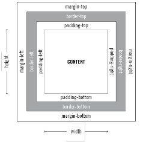

CSS Positioning{ Elements: Attributes }{ display: inline, block, inline-block; }Inline is default, block works like the <p> tag, it creates vertically arranged chunks, inline-block puts multiple chunks on the same line. Also check out this blog post. { position: static, fixed, relative, absolute; }
left; right; top; bottom;These elements accept numbers that represent how far away an object will be from the named element. For example, left: 0; indicates a position aligned with the left (of the parent element), and left: 20px; would align the element 20 px from the left (of the parent element). Use with position relative, absolute, or fixed. { float: left, right; } { clear: left, right, both; }Clear specifies on which side of the element floating elements are not allowed to float. For example, clear: right; would prohibit any floating elements to the right of the current element. Use float with position: static, or position: relative. Pixels (px) vs. Relative-to-element (em) vs. Percentage (%)Pixels will make an element a fixed size relative to pixels on the screen. for example 'width: 50px;' would make the element 50 pixels wide. em will set the element relative to the current size of the element. For example, 0.5em means half the size of the current font. Percentage will set the element as a percentage of the current size of the browser. For example, 'width: 50%;' will make the element half the size of the parent element or the browswer

How-To Guide
The Art of CenteringUse these CSS settings to center an <img> or a <div>: img, div { Content Alignment{ text-align: left, right, center; } |
|
Created By Mark & Kelly |